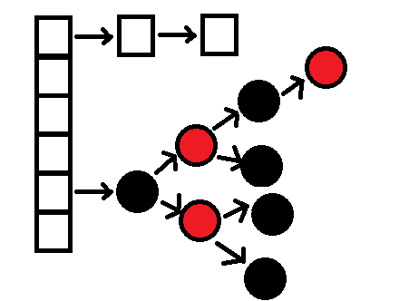
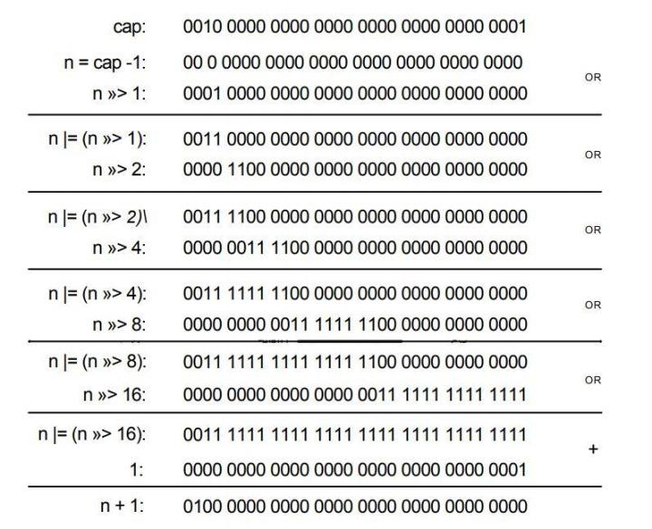

简介
HashMap最早出现在JDK1.2中，底层基于散列算法（Hash）实现。并且HashMap允许null键和null值，是线程非安全类，在多线程环境下可能会存在问题，与之对应的是HashTable类，HashTable是线程安全的HashMap，但是在之前由于HashTable方法都是用synchronized实现，开销比较大，所以在多线程时反而并不使用HashTable，而是使用CurrentHashMap。在JDK1.8后，HashMap和CurrentHashMap的数据结构都有了新变化，即加入了红黑树。
JDK1.7及之前版本中的HashMap数据结构
在JDK1.6，1.7中，HashMap的实现都是用基础的“拉链法”去实现，即数组+链表的形式，通过不同的hash值来对数据进行分配。关于更多1.7版本及之前的HashMap数据结构可以参考我的另一篇博客Java中的容器。
JDK1.8版本的HashMap数据结构

在JDK1.8中对HashMap的源码进行了优化，在JDK1.7中，HashMap处理“碰撞”的时候，都是采用链表来存储，当碰撞的节点很多的时候，查询时间复杂度是O(N)。而JDK1.8中，HashMap处理“碰撞”增加了红黑树这种数据结构，当碰撞节点较少时，采样链表存储，当较大（默认是>8）时，变成使用红黑树（特点是查询时间是O(logN)）存储。
结构
Node是HashMap中的一个静态内部类：
1 | //Node是单向链表，实现了Map.Entry接口 |
TreeNode是红黑树的数据结构：
1 | static final class TreeNode<K,V> extends LinkedHashMap.Entry<K,V> { |
类定义
1 | public class HashMap<K,V> extends AbstractMap<K,V> implements Map<K,V>, Cloneable, Serializable |
变量
1 | /** |
构造方法
1 |
tableSizeFor方法详解
用位运算找到大于或等于cap的最小2的整次幂的数，比如10，则返回16。
- 让cap-1再赋值给n的目的是使得找到的目标值大于或等于原值。例如二进制
0100,十进制是4,若不减1而直接操作，答案是0001 0000十进制是16，明显不符合预期。 - 对n右移1位：001xx…xxx，再位或：011xx…xxx
- 对n右移2位：00011…xxx，再位或：01111…xxx
- 对n右移4位…
- 对n右移8位…
- 对n右移16位,因为int最大就
2^32所以移动1、2、4、8、16位并取位或,会将最高位的1后面的位全变为1。 - 再让结果n+1，即得到了2的整数次幂的值了。
附带一个实例：

loadFactory负载因子
对于HashMap来说，负载因子是一个很重要的参数，该参数反应了HashMap桶数组的使用情况，通过调节负载因子，可以使HashMap时间和空间复杂度上有不同的表现。
当我们调低负载因子时，HashMap 所能容纳的键值对数量变少。扩容时，重新将键值对存储新的桶数组里，键的键之间产生的碰撞会下降，链表长度变短。此时，HashMap 的增删改查等操作的效率将会变高，这里是典型的拿空间换时间。
相反，如果增加负载因子（负载因子可以大于1），HashMap 所能容纳的键值对数量变多，空间利用率高，但碰撞率也高。这意味着链表长度变长，效率也随之降低，这种情况是拿时间换空间。至于负载因子怎么调节，这个看使用场景了。
一般情况下，我们用默认值就可以了。大多数情况下0.75在时间跟空间代价上达到了平衡所以不建议修改。
查找
1 | public V get(Object key) { |
注意：
1 | public V put(K key, V value) { |
事实上，new HashMap();完成后，如果没有put操作，是不会分配存储空间的。
- 当桶数组 table 为空时，通过扩容的方式初始化 table
- 查找要插入的键值对是否已经存在，存在的话根据条件判断是否用新值替换旧值
- 如果不存在，则将键值对链入链表中，并根据链表长度决定是否将链表转为红黑树
- 判断键值对数量是否大于阈值，大于的话则进行扩容操作
扩容机制
在 HashMap 中，桶数组的长度均是2的幂，阈值大小为桶数组长度与负载因子的乘积。当 HashMap 中的键值对数量超过阈值时，进行扩容。 HashMap 按当前桶数组长度的2倍进行扩容，阈值也变为原来的2倍（如果计算过程中，阈值溢出归零，则按阈值公式重新计算）。扩容之后，要重新计算键值对的位置，并把它们移动到合适的位置上去。
1 | final Node<K,V>[] resize() { |
整体步骤：
- 计算新桶数组的容量 newCap 和新阈值 newThr
- 根据计算出的 newCap 创建新的桶数组，桶数组 table 也是在这里进行初始化的
- 将键值对节点重新映射到新的桶数组里。如果节点是 TreeNode 类型，则需要拆分红黑树。如果是普通节点，则节点按原顺序进行分组。
总结起来，一共有三种扩容方式：
- 使用默认构造方法初始化HashMap。从前文可以知道HashMap在一开始初始化的时候会返回一个空的table，并且thershold为0。因此第一次扩容的容量为默认值
DEFAULT_INITIAL_CAPACITY也就是16。同时threshold = DEFAULT_INITIAL_CAPACITY * DEFAULT_LOAD_FACTOR = 12。 - 指定初始容量的构造方法初始化
HashMap。那么从下面源码可以看到初始容量会等于threshold，接着threshold = 当前的容量（threshold） * DEFAULT_LOAD_FACTOR。 - HashMap不是第一次扩容。如果
HashMap已经扩容过的话，那么每次table的容量以及threshold量为原有的两倍。
细心点的人会很好奇，为什么要判断loadFactor为0呢？
loadFactor小数位为 0，整数位可被2整除且大于等于8时，在某次计算中就可能会导致 newThr 溢出归零。
疑问和进阶
1. JDK1.7是基于数组+单链表实现（为什么不用双链表）
首先，用链表是为了解决hash冲突。
单链表能实现为什么要用双链表呢?(双链表需要更大的存储空间)
2. 为什么要用红黑树，而不用平衡二叉树？
插入效率比平衡二叉树高，查询效率比普通二叉树高。所以选择性能相对折中的红黑树。
3. 重写对象的Equals方法时，要重写hashCode方法，为什么？跟HashMap有什么关系？
equals与hashcode间的关系:
- 如果两个对象相同（即用equals比较返回true），那么它们的hashCode值一定要相同；
- 如果两个对象的hashCode相同，它们并不一定相同(即用equals比较返回false)
因为在 HashMap 的链表结构中遍历判断的时候，特定情况下重写的 equals 方法比较对象是否相等的业务逻辑比较复杂，循环下来更是影响查找效率。所以这里把 hashcode 的判断放在前面，只要 hashcode 不相等就玩儿完，不用再去调用复杂的 equals 了。很多程度地提升 HashMap 的使用效率。
所以重写 hashcode 方法是为了让我们能够正常使用 HashMap 等集合类，因为 HashMap 判断对象是否相等既要比较 hashcode 又要使用 equals 比较。而这样的实现是为了提高 HashMap 的效率。
4. HashMap为什么不直接使用对象的原始hash值呢?
1 | static final int hash(Object key) { |
我们发现，HashMap的哈希值是通过上面的方式获取，而不是通过key.hashCode()方法获取。
原因：
通过移位和异或运算，可以让 hash 变得更复杂，进而影响 hash 的分布性。
5. 既然红黑树那么好，为啥hashmap不直接采用红黑树，而是当大于8个的时候才转换红黑树？
因为红黑树需要进行左旋，右旋操作， 而单链表不需要。
以下都是单链表与红黑树结构对比。
如果元素小于8个，查询成本高，新增成本低。
如果元素大于8个，查询成本低，新增成本高。
至于为什么选数字8，是大佬折中衡量的结果-.-，就像loadFactor默认值0.75一样。